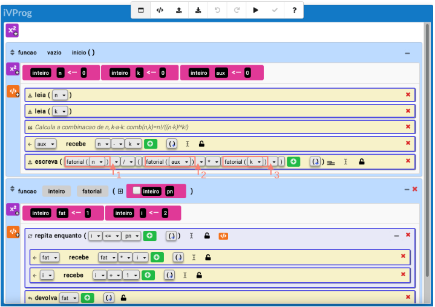

Devolva
Esse comando é utilizado para indicar um valor a ser devolvido por uma função.
O tipo do dado a ser devolvido tem se compatível com o tipo declarado da função,
por exemplo, uma função declarada do "tipo inteiro" tem que devolver um valor inteiro.
Vide
chamada de função.
Uma vez que o comando devolva é encontrado, a execução da função é interrompida, retornando
a execução para o ponto imdiatamente após o ponto em que foi invocada.
O código na figura 1 ilustra isso: usar a função fatorial para computar a
combinação de n elementos, tomado-se apenas k deles (combinação de n, k-a-k).
Sabemos que para a combinação de n, k-a-k é n!/((n-k)!*k!).
A figura 1 apresenta o código ilustrando os pontos de retornos para as 3 chamadas da
função fatorial, dentro do comando escreva, com a expressão
fatorial(n) / (fatorial(aux) * fatorial(k)).
Primeiro é computado fatorial(n) e seu ponto de retorno está indicado pela seta laranja 1,
depois é computado fatorial(aux) (note que o iVProg só permite uma variável como parâmetro daí
usou-se aux = n-k) e seu ponto de retorno está indicado pela seta laranja 2,
por último computa-se fatorial(k) (retorno indicado pela seta 3), com o último resultado
completa-se o cálculo e o valor final será impresso.

Fig. 1. O comando escreva invoca
fatorial(n), depois fatorial(n-k) e por últim fatorial(k).
Para quem deseja saber mais:
Para cada uma das k posições, pode-se tomar qualquer dos n elementos,
o que resultaria F=n*(n-1)*(n-2)*...*(n-k+1) = n!/(n-k)! sequências distintas (de k elementos);
Entretanto no valor F aparecem k! cópias de cada lista com k elementos
(suas permutações), então o resultado final deve ser dividido por k!
resultando na expressão acima.
O código abaixo (em Portugol) é o correspondente textual ao código visual na figura 1.
Portugol. Código textual correspondente
programa {
funcao vazio inicio ( ) {
inteiro n <- 0
inteiro k <- 0
inteiro aux <- 0
leia(n)
leia(k)
aux <- n - k
escreva(fatorial(n) / (fatorial(aux) * fatorial(k))), "\n")
}
funcao inteiro fatorial (inteiro pn) {
inteiro fat <- 1
inteiro i <- 2
enquanto_verdadeiro (i <= pn) {
fat <- fat * i
i <- i + 1
}
devolva fat
}
}